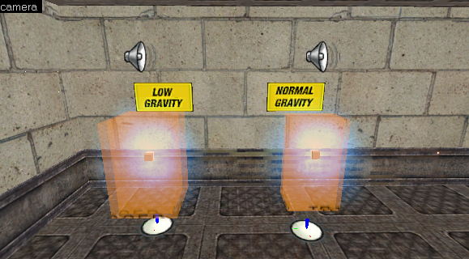
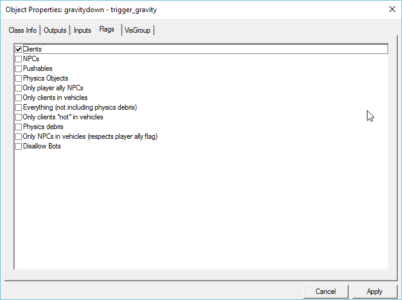
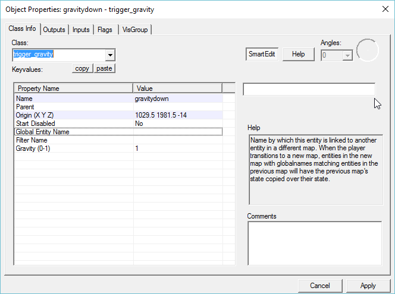
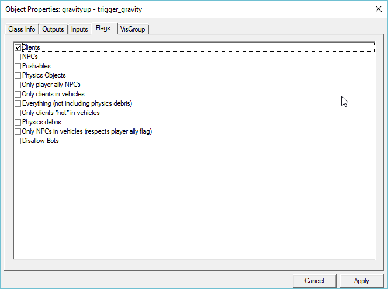
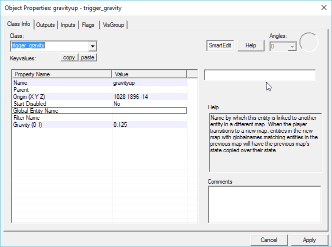

I am trying to get trigger gravity to work in my MP map but can’t seem to get it working. I have an area that you enter to get low gravity and an area to get normal gravity back. Does the trigger_gravity work in BMS multiplayer? Maybe my setup has errors?
Thanks!!
[attach=4543,none,579][/attach][attach=4545,none,664][/attach][attach=4547,none,664][/attach][attach=4546,none,664][/attach]




